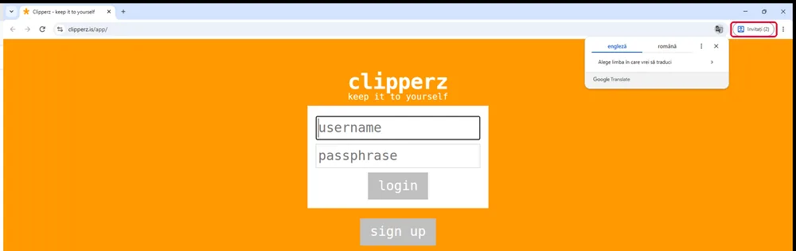

Fereastra de Invitat
La finalul paginii vei putea să deschizi o fereastră de Invitat în Chrome. Vei putea spune ce se șterge când o închizi și ce nu te apără ea.
Ce trebuie să știi
- Ce este deconectarea (ieșirea din cont) și de ce o faci pe un calculator folosit de mai mulți. Se învață în jocul Comunic prin Internet, în siguranță, nivelul 2, pasul „Parola o știi doar tu”.
- De ce nu salvezi parole în browserul școlii. Vezi pagina 1, pasul 1.
1Ce rămâne pe un calculator folosit de mulți
La școală, la același calculator stau zeci de elevi pe săptămână. În browserul obișnuit rămân multe urme de la fiecare:
- paginile vizitate (istoricul);
- conturile în care cineva a uitat să se deconecteze;
- parolele salvate „ca să nu le mai scriu data viitoare”.
Cine se așază după tine le poate folosi pe toate.
2Ce este fereastra de Invitat
Modul Invitat (în engleză, Guest mode) este o fereastră de browser „goală”. Nu vede nimic din ce au lăsat alții. Când o închizi, șterge ce ai făcut tu în ea.
Un cookie este un fișier mic prin care un site te ține minte. De exemplu, ține minte că ești conectat.
Pagina de ajutor Google spune ce se șterge când închizi fereastra: „Istoricul de navigare, cookie-urile și datele privind site-urile vor fi șterse.” Dacă se șterg cookie-urile, site-ul te uită. Deci următorul elev nu intră în contul tău.
Nu am înțeles — explică-mi altfel
E ca o tablă pe care scrii la oră. Profilul obișnuit e tabla pe care n-o șterge nimeni: vezi ce au scris toți înaintea ta. Fereastra de Invitat e o tablă curată. La plecare o ștergi tu, ca următorul să găsească tot o tablă curată.
3Cum o deschizi în Chrome
- Deschizi Google Chrome.
- Faci clic pe pictograma profilului, sus în dreapta (un cerc cu o inițială sau cu un omuleț).
- Alegi profilul de invitat („Invitat”).
- Se deschide o fereastră nouă. Sus în dreapta scrie acum Invitat (sau „Invitați”, dacă sunt deschise mai multe astfel de ferestre).

Dacă nu găsești opțiunea: unele școli o opresc din setări. Atunci deschide o fereastră Incognito, cu tastele Ctrl+Shift+N. Și ea șterge istoricul și cookie-urile când o închizi. Dacă nici asta nu merge, întreabă profesorul.
În Microsoft Edge există ceva asemănător. Caută-l tot în meniul profilului, sus în dreapta. Dacă nu îl găsești, întreabă profesorul.
4Ce NU face fereastra de Invitat
Fereastra de Invitat nu te face invizibil. Tot pagina de ajutor Google spune că activitatea ta se vede în continuare:
- pe site-urile pe care intri;
- la școală, adică la cine are grijă de rețeaua școlii;
- la firma care dă internetul.
Mai sunt două lucruri de știut:
- Fișierele descărcate. Google nu scrie că le șterge și pe ele. Ce salvezi în folderul Descărcări poate rămâne pe calculator.
- Tastele apăsate. Un program ascuns ar putea înregistra ce tastezi. Fereastra de Invitat nu te apără de el. Vei vedea soluția în pagina 5.
De ce le folosim împreună: seiful ține parolele încuiate. Fereastra de Invitat se asigură că, după ce pleci, calculatorul nu mai ține minte nimic despre contul tău.
Încearcă
Exercițiu. Ai lucrat într-o fereastră de Invitat și ai închis-o. Pentru fiecare lucru, spune: se șterge sau rămâne?
- istoricul paginilor vizitate;
- faptul că erai conectat pe platforma școlii (cookie-ul);
- un fișier descărcat în Descărcări;
- ce vede cine are grijă de rețeaua școlii.
Verifică răspunsul
1 și 2 se șterg. Istoricul și cookie-urile dispar la închidere, spune Google.
3 și 4 rămân. Fișierul descărcat poate rămâne pe disc. Rețeaua școlii vede activitatea oricum.
Încă un exercițiu. Nu găsești profilul de invitat în Chrome. Ce taste apeși ca să deschizi o fereastră care șterge și ea istoricul la închidere?
Verifică răspunsul
Ctrl+Shift+N deschide fereastra Incognito.